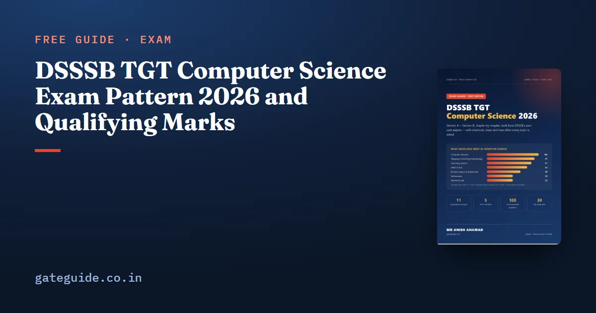

DSSSB TGT Computer Science Exam Pattern 2026 and Qualifying Marks

The DSSSB TGT Computer Science exam pattern is simple on paper: 200 one-mark questions in two hours, with a quarter mark cut for each wrong answer. What decides selection is the detail — which section the qualifying marks apply to, and how negative marking changes the number of questions you should attempt. This guide explains both.
In this guide
Key takeaways
- One tier, computer-based: 200 questions, 200 marks, 2 hours.
- Section A: 100 general questions (5 × 20). Section B: 100 Computer Science questions including teaching methodology.
- Each wrong answer costs 0.25 marks; a blank costs nothing.
- Qualifying marks — 40% (General/EWS), 35% (OBC Delhi), 30% (SC/ST/PwBD) — apply to Section B and to the total, not to Section A.
- Questions are bilingual except the Hindi and English sub-sections.
The words you will meet
- One-tier exam — there is only this one written test; no mains, no descriptive paper for this post.
- Qualifying marks — the minimum percentage you must reach to be considered; selection is then by merit among those who qualify.
- Normalisation — a statistical adjustment of marks across shifts, used "if required" by the formula DSSSB published in 2018.
The pattern in one table
| Section | Sub-section | Questions | Marks |
|---|---|---|---|
| A | General Awareness | 20 | 20 |
| A | General Intelligence & Reasoning | 20 | 20 |
| A | Arithmetical & Numerical Ability | 20 | 20 |
| A | Hindi Language & Comprehension | 20 | 20 |
| A | English Language & Comprehension | 20 | 20 |
| B | Computer Science incl. teaching methodology | 100 | 100 |
| Total | 200 | 200 |
The paper is two hours long, so the average time is 36 seconds per question. Section A is usually faster per question than Section B, which gives you more time for code and calculation questions in Computer Science.
Negative marking, worked out
Every wrong answer subtracts 0.25. Two quick calculations show what that means:
- Pure guess among 4 options: chance right 1/4 → +1; chance wrong 3/4 → −0.25 each. Expected value = 0.25 − 0.1875 = +0.0625, almost nothing, with real risk.
- Two options eliminated: chance right 1/2 → expected = 0.5 − 0.125 = +0.375. Worth taking.
Remember: guess only when you have removed at least one wrong option. Our guide on how many questions to attempt turns this into a target.
Qualifying marks, exactly
Advertisement 03/2026 sets these minimums:
| Category | Minimum |
|---|---|
| General / EWS | 40% |
| OBC (Delhi) | 35% |
| SC / ST / PwBD | 30% |
| Ex-servicemen | 5% relaxation within their category, but not below 30% |
The note under the scheme says the minimum applies "only in domain subject specific i.e. Section-B" and that there are no minimum marks in Section A; the minimum is also applied to the cumulative total. In numbers, a General candidate needs at least 40 out of 100 in Section B and 80 out of 200 overall.
Trap: "no minimum in Section A" does not mean Section A is unimportant. A strong Section A pushes your total — and merit is decided on the total. Read the Section A strategy for an easy 55–65 there.
The Board may also prescribe a higher cut-off than these minimums, so treat 40% as the floor, not the target.
What a safe score looks like
Qualifying is not the same as being selected; merit decides selection among qualified candidates. A practical target for a General candidate:
| Part | Target (net, after negatives) |
|---|---|
| Section A | 55–65 |
| Section B | 60–70 |
| Total | 115–135 |
Section B has the larger spread between strong and weak candidates, so time spent there pays twice: once for the qualifying line and again for merit. The syllabus guide shows which Section B topics to finish first.
After the exam
DSSSB displays draft answer keys after the exam and invites objections online within a set window. There is no re-evaluation. Keep a note of your response sheet details so you can check the key quickly when it appears.
How the pattern should shape your practice
Knowing the pattern is only useful if your practice copies it. Three habits make the difference:
- Practise in 200-question blocks. A two-hour paper tests stamina as much as knowledge; questions 170–200 are where tired candidates lose easy marks.
- Track net score, not raw score. After each mock, write correct answers, wrong answers and net marks (correct − 0.25 × wrong). The net figure is what DSSSB uses.
- Practise in both languages if you need to. Every question except the language sections is printed in Hindi and English. If a technical term is clearer in English, read the English version — you are allowed to switch freely on screen.
Remember: a mock without the −0.25 rule is not a DSSSB mock. Always score yourself the way the Board will.
A worked example
Take a General candidate who answers 150 questions: 60 in Section A and 90 in Section B. Suppose 50 of the Section A answers and 70 of the Section B answers are correct. Section A net is 50 − 10 × 0.25 = 47.5, and Section B net is 70 − 20 × 0.25 = 65. The total is 112.5. Section B is above 40 and the total is above 80, so the candidate qualifies, and the total of 112.5 then competes for merit. Now suppose the same candidate had guessed 30 more questions at random and got only 7 of them right. They would gain 7 marks and lose 23 × 0.25 = 5.75 marks, a net gain of just 1.25 for a great deal of risk. That is why careful attempts matter more than a long list of answers.
Common misunderstandings
Three misunderstandings come up again and again. First, some candidates believe they must pass each Section A sub-section separately. They do not: there is no minimum in Section A at all. Second, some believe that crossing 40% guarantees selection. It does not: it only makes you eligible for merit, and selection depends on rank among all qualified candidates in your category. Third, some think that leaving a question blank is penalised. It is not: only wrong answers lose marks. Keep these three points clear and your strategy in the exam hall becomes much simpler.
If you are unsure where to begin, start with the topic that gave the most questions in the past papers and work downwards. Write short notes as you go, revise them every few days, and test yourself with timed questions rather than only reading. Steady daily work over the remaining weeks is far more effective than long sessions in the final days, and it leaves you calm enough on the exam day to read every question carefully.
Quick revision
- 200 questions, 200 marks, 2 hours; one tier; computer-based.
- Section A 100 (5 × 20); Section B 100 Computer Science incl. teaching methodology.
- −0.25 per wrong answer; blanks cost nothing.
- Minimums 40 / 35 / 30% on Section B and the total; none on Section A alone.
- Aim for 115–135 net, with Section B above 60.
Frequently asked questions
How many questions are in the DSSSB TGT Computer Science exam?
The exam has 200 multiple-choice questions of one mark each, for 200 marks, in two hours. Section A has 100 questions (20 each in General Awareness, Reasoning, Arithmetic, Hindi and English) and Section B has 100 Computer Science questions, which include questions on teaching methodology.
Is there negative marking in DSSSB TGT?
Yes. Advertisement 03/2026 deducts 0.25 marks for each wrong answer to a one-mark question. An unanswered question costs nothing. So a random guess among four options has an expected value of zero, while an educated guess after removing two options is worth taking.
What are the qualifying marks for DSSSB TGT Computer Science?
The minimum is 40 per cent for General and EWS, 35 per cent for OBC (Delhi) and 30 per cent for SC, ST and PwBD candidates, with a 5 per cent relaxation for ex-servicemen within their category. It applies to Section B and to the total; Section A has no separate minimum. The Board may set a higher cut-off.
Is the DSSSB paper in Hindi or English?
Questions are bilingual, in Hindi and English, so you can read each question in either language. The exceptions are the language sub-sections: the Hindi questions are only in Hindi and the English questions only in English.
Sources
Dates, vacancies and the syllabus are set by DSSSB and can change. Always confirm at dsssb.delhi.gov.in. GATE Guide is not affiliated with DSSSB.